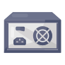
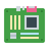
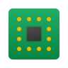
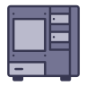
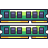
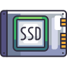
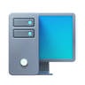
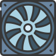

Central de Ajuda
Abrir um Ticket
Qual o seu problema?
Selecione um dos componentes abaixo para ver os problemas relacionados e suas soluções.

Fonte

Placa-Mãe

Processador
Placa de Vídeo

Gabinete

Memória

SSD/HD
RGB

PC Completo

Refrigeração
Problemas